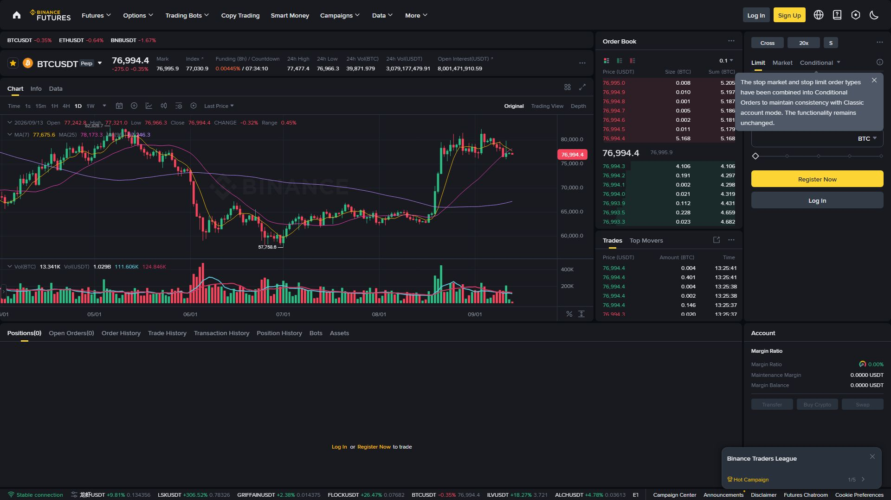
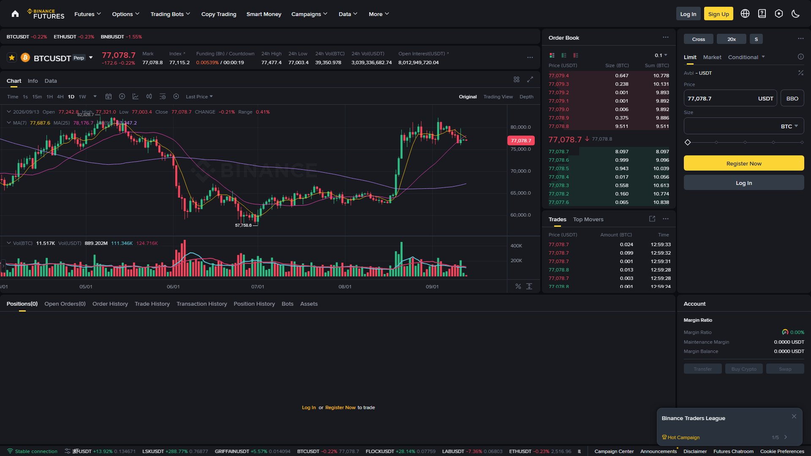

یہ باب فیوچرز کا سب سے اہم حصہ ہے: Take Profit، Stop Loss، Risk:Reward اور لیوریج۔ بغیر ان چاروں کو سمجھنے کے فیوچرز ٹریڈ کرنا خودکشی کے برابر ہے۔

Take Profit = ایک ہدف قیمت، جہاں پہنچنے پر پوزیشن خودکار طور پر بند ہو کر منافع محفوظ کر لیتی ہے۔
Long BTC @ 96,000
TP1 : 98,000 → 50% پوزیشن بند
TP2 : 100,000 → باقی 50% بند
جیسے قیمت بڑھتی جائے، منافع مرحلہ وار قفل ہوتا جاتا ہے| طریقہ | تفصیل |
|---|---|
| Support/Resistance | اگلی مزاحمت پر TP |
| Fibonacci | 61.8%، 100%، 161.8% |
| ATR | Average True Range کے گنا |
| Risk:Reward | R:R کے مطابق ہدف |
💡 منافع کو مرحلہ وار لینا (TP1، TP2) منصوبہ بند انداز ہے — اچانک فیصلے سے بہتر۔
Stop Loss = آپ کا حفاظتی نیٹ: قیمت اِس سطح تک پہنچے تو پوزیشن خودکار بند ہو کر نقصان محدود کر دیتی ہے۔
Long BTC @ 96,000
SL : 94,000
SL تک پہنچنے پر بند → نقصان تقریباً 2.1% (per BTC)| طریقہ | تفصیل |
|---|---|
| S/R کے پیچھے | حمایت (Support) کے نیچے |
| ATR | 2x ATR کے فاصلے پر |
| Fibonacci | 38.2% پل بیک |
| فیصد | شعوری حد (عموماً 1–3%) |
بغیر SL کے ٹریڈ = جوا۔ SL کے ساتھ ٹریڈ = منظم فیصلہ۔
| قسم | کام | استعمال |
|---|---|---|
| Regular SL | مخصوص قیمت پر بند | ہر ٹریڈ |
| Trailing Stop | قیمت کے ساتھ آگے بڑھتا ہے | منافع محفوظ کرنے کے لیے |
| Stop-Market | فعال ہوتے ہی فوری بند | ضمانت شدہ اخراج (Slippage ممکن) |
💡 فیوچرز میں بائننس عام طور پر Stop-Market رویہ رکھتا ہے (Trigger پر فوری بندش)، تاکہ پوزیشن لازماً بند ہو۔
Trailing Stop = ایسا SL جو قیمت کے ساتھ، ہماری سمت میں خودکار آگے بڑھتا جاتا ہے — مگر پیچھے نہیں ہٹتا۔
Long BTC @ 96,000
Trailing Distance : 500 USDT
قیمت $96,000 → SL ~$95,500
قیمت $97,000 → SL ~$96,500 (آگے بڑھا)
قیمت $98,000 → SL ~$97,500 (آگے بڑھا)
قیمت $97,400 پر گرے → SL $97,500 پر فعال → منافع قفل ✅| فائدہ | خطرہ |
|---|---|
| خودکار، بغیر نگرانی | بہت کم فاصلہ پر شور میں جلدی فعال |
| منافع محفوظ | فاصلہ زیادہ ہو تو منافع کم |
| رجحان کے ساتھ چلتا ہے | رینج مارکیٹ میں غیر مؤثر |
R:R = آپ کے رسک (SL) اور ہدف (TP) کا تناسب۔
R:R = (TP − Entry) ÷ (Entry − SL)
مثال:
Entry : 96,000
TP : 100,000 → فائدہ = 4,000
SL : 94,000 → رسک = 2,000
R:R = 4,000 ÷ 2,000 = 1:2| R:R | جیتنے کی کم از کم شرح |
|---|---|
| 1:1 | 50% |
| 1:1.5 | 40% |
| 1:2 | ~33% |
| 1:3 | 25% |
| 1:4 | 20% |
💡 توصیہ: کم از کم 1:2 کا R:R رکھیں۔ بہت قریب SL + غیر حقیقی TP سے بچیں۔
لیوریج بڑھے → Liquidation قریب آ جاتی ہے
لیوریج کم → Liquidation دور رہتی ہے5x لیوریج : Liquidation تقریباً 20% دور
20x لیوریج: Liquidation تقریباً 5% دور 🚨| لیوریج | SL کا فاصلہ | مناسب کس کے لیے |
|---|---|---|
| 2x | 5% تک | نئے صارفین |
| 5x | 2–3% | درمیانے |
| 10x | 1–2% | تجربہ کار |
| 20x+ | 🚨 | نہ کریں |
⚠️ یہ اعداد تصوراتی رہنما ہیں؛ اصل Liquidation Price ہر پوزیشن کے لیے بائننس خود دکھاتا ہے۔
Partial Close = پوزیشن کا صرف ایک حصہ بند کرنا؛ باقی کھلا رہتا ہے۔
پوزیشن: 0.1 BTC @ 96,000
Step 1 → 0.05 BTC بند @ 98,000 (منافع قفل)
Step 2 → باقی 0.05 BTC کھلا
SL → بقایا پر 95,000
TP2 → بقایا پر 102,000| فائدہ | وضاحت |
|---|---|
| حصہ منافع محفوظ | تناؤ کم |
| باقی پوزیشن چلتی رہے | بڑے رجحان کا فائدہ بھی |
| لچک | TP1، TP2 کی منصوبہ بندی |
Futures میں عام طور پر پوزیشن کے ساتھ الگ TP اور SL خانے ہوتے ہیں (OCO Spot کا تصور ہے)۔
طریقہ:
1. پوزیشن کھولیں (Long/Short)
2. Positions ٹیب کھولیں
3. اُس پوزیشن کے سامنے TP/SL بٹن دبائیں
4. TP (ہدف) اور SL (حفاظت) قیمتیں درج کریں
5. Confirm ✅1. پہلے SL سیٹ کریں (بقا سب سے اہم)
2. پھر TP1 لگائیں (حصہ منافع)
3. پھر TP2 (باقی)
4. منافع آنے پر Trailing Stop فعال کریں
TP، SL، R:R — یہ تینوں آپ کے ٹریڈنگ کی بنیاد ہیں۔ بغیر ان کے ٹریڈ ایک جوا ہے۔
SL = نجات، TP = ہدف، R:R = منصوبہ۔ تینوں سیٹ کیے بغیر Buy یا Sell نہ دبائیں۔